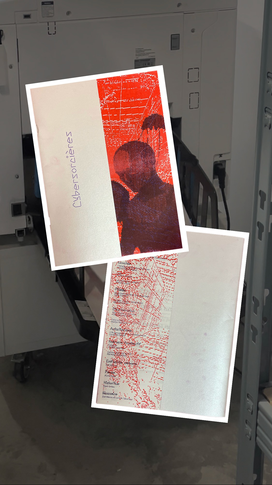
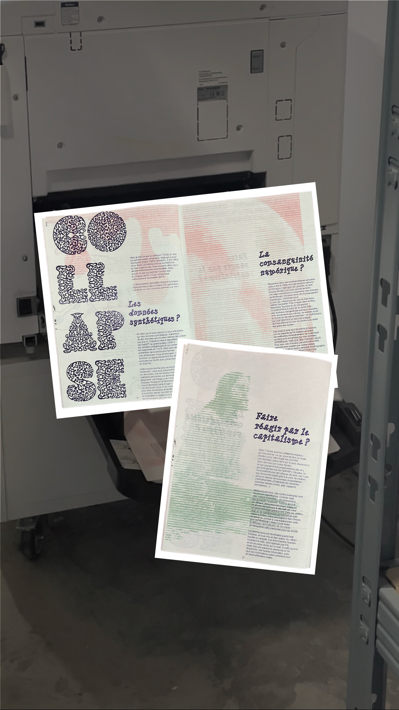
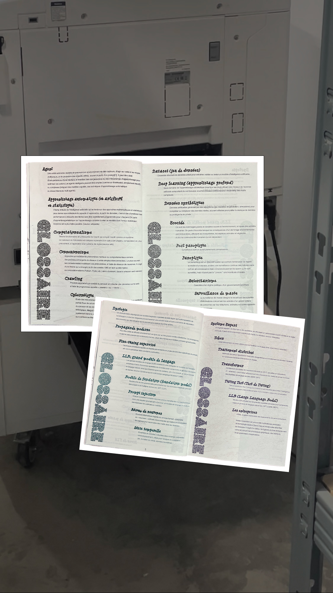

Design engagé · Édition collective
Fanzine
Cybersorcières
Un fanzine collectif autour de l’intelligence artificielle, mis en page en HTML / CSS puis imprimé en risographie. Quatorze articles pour développer notre regard critique sur la place croissante de l’IA dans nos vies.
Du code à l’encre : le navigateur devient un outil de mise en page.

Le projet collectif
Quatorze articles,
un regard critique.
Réalisé au sein du Master Design Social de Nîmes, sous la direction de @luh2203, ce fanzine réunit quatorze articles consacrés à l’intelligence artificielle.
Le projet nous a permis d’explorer collectivement ses enjeux et de développer notre sens critique, tout en expérimentant une autre manière de fabriquer un objet éditorial.
Je présente ici ma contribution. L’édition complète est à découvrir sur @cybersorcieres.
Ma compétence
Coder
la mise en page.
Pour ce projet, nous avons réalisé la mise en page en web to print : du HTML et du CSS, associés à Paged.js, pour composer des pages destinées à l’impression.
Une grille pensée en code
La structure, la pagination et les fonds perdus se préparent dans le code. Une grille commune permet d’organiser les quatorze articles tout en laissant une place aux explorations graphiques de chacun·e.
Penser déjà à l’encre
L’impression en risographie impose ses propres contraintes : une palette limitée à deux ou trois couleurs, du grain et des décalages. J’ai abordé la mise en page en tenant compte de cette matérialité dès la conception.
Une édition qui peut évoluer
Cette démarche m’intéresse pour sa souplesse : mettre à jour un article, réutiliser une structure et penser des versions web et imprimées à partir d’un même code. Elle ouvre la voie à des éditions évolutives, partageables en open source et reproductibles.

Mes pages
Une grille
qui se fissure.
J’ai travaillé sur le collapse de l’IA en jouant avec une grille codée qui se casse. La mise en page devient un moyen d’interroger le sujet : elle met en tension l’ordre du code et ses ruptures.
Mon intention : montrer que l’IA n’est pas neutre et faire porter ce regard critique par la forme même des pages.
